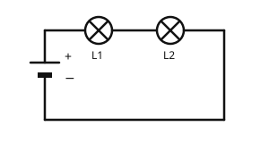

Die Reihenschaltung
Mit einem KI-Tutor lernen
Ein KI-Tutor erklärt dir diese Seite und hilft dir bei den Übungen. Wähl deinen Assistenten:
Mit Claude öffnen Mit ChatGPT öffnen Mit Mistral Vibe öffnen
Du nutzt dein eigenes Konto beim Anbieter. Der Assistent ist kein Angebot von lernapps.net: lernapps liefert nur Inhalte und Übungen. Die Wahl gilt für alle Seiten, nur auf diesem Gerät.
Zwei Lampen an einer Batterie
Bisher hatte jeder Stromkreis eine Lampe. Was geschieht, wenn du zwei Lampen an eine Batterie hängst? Dafür gibt es zwei Möglichkeiten. Die erste lernst du hier kennen: die Reihenschaltung. Du nutzt dabei, was du über Schaltpläne, Stromstärke und Spannung weißt.
Danach kannst du eine Reihenschaltung aufbauen und erklären, was passiert, wenn ein Bauteil ausfällt.
Ein einziger Weg für den Strom
In der Reihenschaltung liegen die Lampen hintereinander. Der Strom hat nur einen Weg: von der Batterie durch die erste Lampe, durch die zweite Lampe und zurück zur Batterie. Es gibt keine Abzweigung.

Die Lampen L1 und L2 liegen hintereinander. Zähle die möglichen Wege des Stroms.
Quelle: eigene Zeichnung. Lizenz: CC-BY-4.0.- Reihenschaltung
In einer Reihenschaltung liegen die Bauteile hintereinander, sodass der Strom nur einen einzigen Weg hat.
Ausfall: Fällt eine Lampe aus, zum Beispiel weil ihr Draht durchbrennt, ist der einzige Weg des Stroms unterbrochen. Das ist wie ein offener Schalter: Es fließt nirgends Strom, beide Lampen gehen aus.
Messwerte: Die Tabelle zeigt Beispielwerte, die man bei zwei gleichen Lampen und einer 6-V-Batterie misst.
| Messstelle | Messwert |
|---|---|
| Stromstärke vor L1 | 0,2 A |
| Stromstärke zwischen L1 und L2 | 0,2 A |
| Stromstärke hinter L2 | 0,2 A |
| Spannung an der Batterie | 6 V |
| Spannung an L1 | 3 V |
| Spannung an L2 | 3 V |
Aus der Tabelle liest du zwei Regeln ab:
- Die Stromstärke ist an jeder Stelle gleich. Es gibt nur einen Weg, und der Strom wird nicht verbraucht.
- Die Spannung der Batterie teilt sich auf die Lampen auf: 3 V und 3 V ergeben zusammen die 6 V der Batterie.
Beispiel: Die Lichterkette
Warum geht die ganze Kette aus?
Eine alte Lichterkette hat die Lämpchen in Reihe. Eine Birne ist kaputt, und die ganze Kette ist dunkel.
- Alle Lämpchen liegen hintereinander. Es gibt nur einen Weg für den Strom.
- Die kaputte Birne unterbricht diesen Weg an einer Stelle.
- Ein unterbrochener Weg heißt: Es fließt nirgends Strom.
- Darum sind alle Lämpchen aus, nicht nur das kaputte.
Übung
Übung
Lösung
Beide gehen aus. richtige Antwort
Der einzige Weg des Stroms ist an L2 unterbrochen. Damit fließt in der ganzen Schaltung kein Strom.
Beide leuchten weiter.
Ohne Strom leuchtet keine Lampe. Der Strom hat nur den einen Weg, und der ist unterbrochen.
Nur L1 leuchtet weiter, weil sie vor L2 liegt.
Die Lage vor der defekten Lampe hilft nicht. Der Weg ist ein Kreis, an einer Stelle unterbrochen, und dann fließt nirgends Strom.
In der Reihenschaltung gibt es nur einen Weg. Fällt ein Bauteil aus, fließt in der ganzen Schaltung kein Strom.
Mehr dazu:
Übung
Lösung
Richtige Antwort: Die Aussage stimmt nicht.
Die Stromstärke ist an jeder Stelle gleich. Der Strom wird nicht verbraucht, er hat nur einen Weg.
Mehr dazu:
Übung
Lösung
Sie teilt sich auf beide Lampen auf. richtige Antwort
Die Spannungen an den Lampen ergeben zusammen die Spannung der Batterie, wie 3 V und 3 V die 6 V.
Jede Lampe bekommt die volle Spannung der Batterie.
Dann wären die Spannungen zusammen größer als die der Batterie. In der Reihenschaltung verteilt sich die Spannung.
Nur die erste Lampe bekommt Spannung.
Beide Lampen leuchten, also liegt an beiden eine Spannung.
In der Reihenschaltung teilt sich die Spannung der Batterie auf die Bauteile auf.
Mehr dazu:
Übung
Lösung
Weil er den einen Weg unterbricht und damit alle Lampen aus sind. richtige Antwort
Ein Schalter im einzigen Weg des Stroms unterbricht den ganzen Kreis.
Weil nur so Strom durch den Schalter fließen kann.
Strom fließt auch durch einen Schalter, der neben anderen Bauteilen liegt.
Weil der Schalter die Lampen heller macht.
Ein Schalter öffnet und schließt den Weg, er macht nichts heller.
Ein Schalter in Reihe öffnet den einzigen Weg und schaltet damit alles aus, was in diesem Weg liegt.
Mehr dazu: